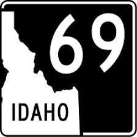
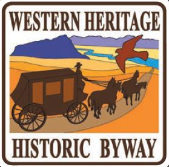

The World Center For Birds of Prey
It all started with the Peregrine
The Peregrine Fund was founded in 1970 to restore the Peregrine Falcon,
which was removed from the U.S. Endangered Species List in 1999. That
success encouraged the organization to expand its focus and apply its
experience and understanding to raptor conservation efforts on behalf
of more than 100 species in 65 countries worldwide, including the
California Condor and Aplomado Falcon in the United States. The
organization is non-political, solution-oriented and hands-on.